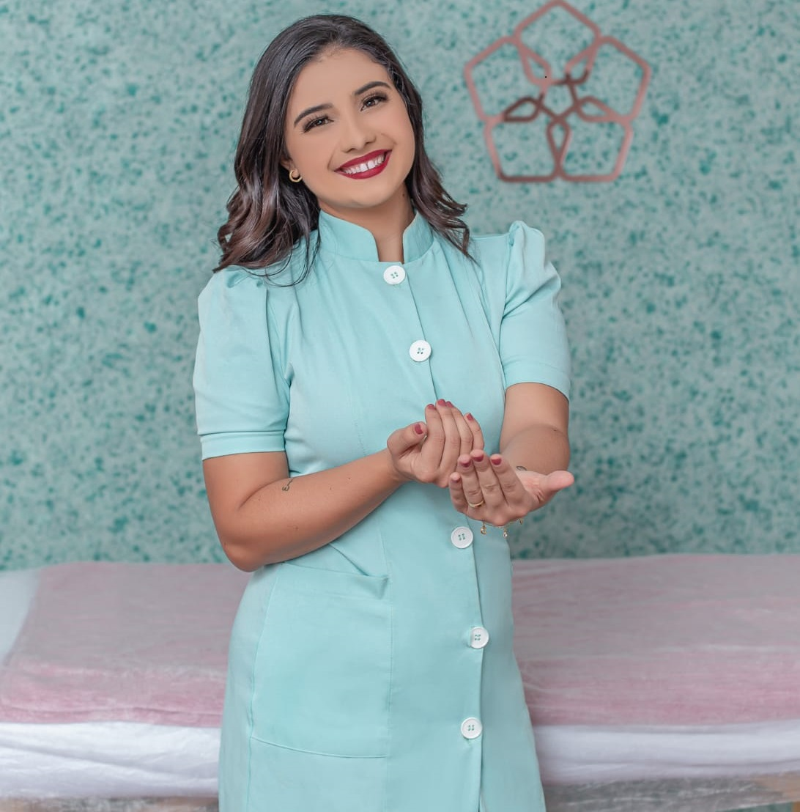

"Yasmin Victoria Bittencourt de faria
Tem 25 anos, casada a 7 anos com Douglas, mãe da Manu.
Ama viajar, cantar e ver séries criminais de emergência e medicina ...
Trabalha desde os 14 anos, sempre com atendimento ao público sendo vendas online ou presencial, já tbm
trabalhou com assessoria e cerimonial de casamento...
Desde que descobriu sua paixão pelo bem estar das pessoas através da massagem com o foco no alívio da dor
tanto física quanto mentais, diminuindo assim os sintomas das doenças do século, stress, ansiedade,
depressão…
Também ministro cursos na área, inclusive de atendimento e vendas…
Chave para o sucesso:
Trabalhar com o que ama e fazer sempre o seu melhor !"

SERVIÇOS

As vantagens dos procedimentos estéticos para saúde e beleza
Primeiramente, a saúde e beleza caminham juntas e para ter uma pele bonita e saudável, é possível contar com procedimentos estéticos para saúde e beleza cada vez mais sofisticados.
Vale salientar que são inúmeras as intervenções que podem melhorar o aspecto da pele, clareando manchas, reduzindo a oleosidade, fechando os poros, melhorando a flacidez e outros sinais de envelhecimento.
Contudo, as indicações são individualizadas e devem ser direcionadas de acordo com as características da pele de cada paciente. Pois, tratamentos combinados são bem interessantes e podem trazer excelentes resultados.
Primeiramente, a saúde e beleza caminham juntas e para ter uma pele bonita e saudável, é possível contar com procedimentos estéticos para saúde e beleza cada vez mais sofisticados.
Vale salientar que são inúmeras as intervenções que podem melhorar o aspecto da pele, clareando manchas, reduzindo a oleosidade, fechando os poros, melhorando a flacidez e outros sinais de envelhecimento.
Contudo, as indicações são individualizadas e devem ser direcionadas de acordo com as características da pele de cada paciente. Pois, tratamentos combinados são bem interessantes e podem trazer excelentes resultados.
Na massoterapia existem diversos tipos de técnicas que se
adequam aos objetivos e necessidades de cada pessoa. Por isso,
durante a sessão, cabe somente ao massoterapeuta avaliar e
escolher o melhor método de aplicação. Com a avaliação correta
de um profissional capacitado, a sensação de alívio e o
equilíbrio do paciente é garantida.
Diferente da massagem comum, que utiliza sempre a mesma técnica de aplicação, na massoterapia as técnicas variam de acordo com a necessidade individual de cada paciente. Conheça as 6 principais técnicas aplicadas na massoterapia.
A massagem terapêutica faz parte do conjunto de técnicas da massoterapia que tem o objetivo de eliminar atrofias do corpo, atuar no tratamento de dores e prevenir contusões musculares.
Posturas inadequadas, rompimento de um ligamento e dores nas articulações são alguns exemplos de situações que exigem a massagem terapêutica como tratamento.
Além de promover efeitos fisiológicos, como aumento do fluxo sanguíneo, estimulação nos processos de cicatrização e alívio das dores, a massagem terapêutica também oferece efeitos psicológicos como relaxamento, sensação de bem-estar e alívio da ansiedade.
Diferente da massagem comum, que utiliza sempre a mesma técnica de aplicação, na massoterapia as técnicas variam de acordo com a necessidade individual de cada paciente. Conheça as 6 principais técnicas aplicadas na massoterapia.
A massagem terapêutica faz parte do conjunto de técnicas da massoterapia que tem o objetivo de eliminar atrofias do corpo, atuar no tratamento de dores e prevenir contusões musculares.
Posturas inadequadas, rompimento de um ligamento e dores nas articulações são alguns exemplos de situações que exigem a massagem terapêutica como tratamento.
Além de promover efeitos fisiológicos, como aumento do fluxo sanguíneo, estimulação nos processos de cicatrização e alívio das dores, a massagem terapêutica também oferece efeitos psicológicos como relaxamento, sensação de bem-estar e alívio da ansiedade.